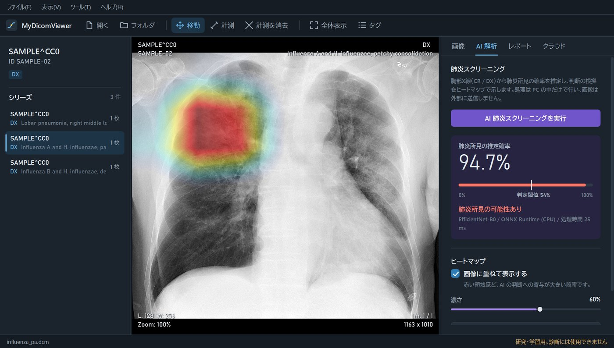
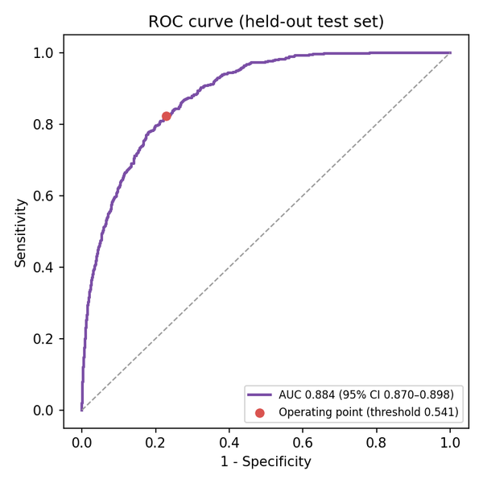

MyDicomViewer
医療画像の国際標準規格DICOMを扱う、Windows向けのビューア&クラウドPACS。PCの中で完結する肺炎スクリーニングAI、読影ソフトと同じ操作感のビューア、匿名化したうえでのクラウド保存を、製品として出せる品質を目標に作り込みました。

概要
DICOMは、CTやX線などの医療画像と、患者・検査の情報をひとまとめにして扱う国際標準のフォーマットです。MyDicomViewerは、このDICOMを表示・管理するWindowsアプリに、PCの中だけで動く肺炎スクリーニングAI、匿名化したうえでのクラウド保存、生成AIによる読影レポートの下書きを組み合わせたものです。
当初はシンプルなビューアでしたが、「商品として出せるレベル」を目標に、設計・品質、ビューア機能、配布・運用、AIのすべてを作り直し、v1.0.0として公開しました。
| プラットフォーム | Windows デスクトップ(WPF / .NET 10) |
| 開発形態 | 個人開発 |
| 構成 | WPFアプリ(MVVM)/ 画面に依存しない Core ライブラリ / xUnit テスト / AIモデルの学習・評価(Python) |
| 主な技術 | fo-dicom, ONNX Runtime, PyTorch(EfficientNet-B0), Azure Blob Storage, Cosmos DB, OpenAI API, Velopack, GitHub Actions |
| ライセンス | MIT License(学習済みモデルと医用画像は含まない) |
試してみる
ブラウザー版 haru-ki417.github.io/MyDicomViewer/ — スマホ・タブレット・パソコンで、インストールなしで使えます。画像はブラウザーの中だけで読み、どこにも送りません。AIは同じモデル(pneumonia.onnx)を選ぶと、ONNX Runtime Webでブラウザーの中で推論します(学習データの利用条件に配慮し、モデルはサイトに置いていません)。
Windows 10 / 11(64bit)で動きます。インストーラーとインストール不要版を、GitHub Releasesで公開しています。
- 最新のリリースから
MyDicomViewer-win-Setup.exeをダウンロードして実行します(インストール不要のPortable.zipもあります)。 - 署名をしていないため「WindowsによってPCが保護されました」と表示された場合は、「詳細情報」→「実行」を選びます。
- 見本のDICOM画像(CC0の公開画像から作成、患者情報なし)をダウンロードし、ドラッグ&ドロップで開きます。
AIスクリーニングの学習済みモデルは配布物に含めていないため、ダウンロード版で試せるのはビューアの機能です。クラウド保存とAIレポートは、Azure・OpenAIのキーを設定した場合に使えます。
オンデバイスAIによる肺炎スクリーニング
胸部X線の正面像から、肺炎を示唆する所見がある確率を推定し、AIが判断の根拠とした領域をヒートマップで重ねて表示します。モデルはImageNetで事前学習したEfficientNet-B0を、RSNA Pneumonia Detection Challengeのデータ(26,684人分)で転移学習したものです。
推論はONNX RuntimeでPCの中だけで行い、CPUで1枚あたり約43ミリ秒。医療画像を外部のサーバーに送りません。結果は、確率・閾値・モデル名と「Research use only」の注記、元画像への参照を含んだDICOM(二次取込画像)として保存できます。
また、学習(Python)とアプリ(C#)で前処理がずれると精度が落ちるため、正規化・縮小・丸め方まで同じ手順で実装し、単体テストで一致を確認しています。アプリに組み込んだONNXモデルでの評価結果も、学習時のAUCと一致しました。
精度の評価と、その限界
データは患者単位で学習80% / 検証10% / テスト10%に分け、同じ患者が複数の分割に入らないようにしました。判定の閾値は検証データで決め、テストデータ(2,669人)には一度も調整せずに適用しています。
| AUC | 0.884(95%信頼区間 0.870–0.898、ブートストラップ1,000回) |
| 感度 / 特異度 | 82.4% / 77.2% |
| 陽性的中率 / 陰性的中率 | 51.2% / 93.8% |
| Pointing Game | 73.2%(ヒートマップの最大点が病変の枠内にある割合。偶然なら11.8%) |
| 推論時間 | 約43 ms / 枚(CPU) |

一方で、陽性と判定したうちの約半数は偽陽性であること、ヒートマップが肺の外(腹部やカテーテルなど)に反応する場合があること、単一のデータセットでしか検証していないことも、用途・学習データ・評価方法とあわせてモデルカードに明記しました。
安全のための設計
AIの出力が誤解されないよう、表示の仕方そのものに配慮しています。
- 「研究・学習目的、診断には使用不可」をアプリ上に常に表示し、初回起動時に注意事項への同意を求める
- モダリティがCR / DX以外の画像では、実行前に警告する
- 陰性と判定した場合はヒートマップを既定で表示しない(Grad-CAMは陰性画像でも必ずどこかが赤くなり、所見の位置と誤解されるため)
- 推論はPC内で完結し、画像を外部に送信しない
ビューア機能
読影ソフトと同じ操作感を目標に、日常的に使う操作を一通り実装しました。
- ファイル・フォルダ・ドラッグ&ドロップで読み込み、シリーズごとに撮影順で表示
- ホイールでスライス送り、カーソル位置を中心に拡大、右ドラッグで濃度(ウィンドウ)調整
- 肺野・縦隔・腹部・骨・脳のCT濃度プリセット
- 画像の四隅に患者・検査情報を表示、DICOMタグの一覧と検索
- DICOMの画素間隔を使った距離計測(mm)。拡大率補正前の値しか無いX線は区別して表示
クラウド保存と生成AIレポート
DICOM規格PS3.15の基本プロファイルに沿って匿名化してからAzure Blob Storageに保存し、Cosmos DBで検索・取得できます。検索はパラメーター化クエリで組み立てています。
表示中の画像からGPT-4o miniで読影レポートの下書きを生成する機能もありますが、患者IDは送信せず、生成文には免責事項を必ず含めています。
品質・配布・運用
画面に依存しない処理をCoreライブラリに分離し、MVVMと依存性注入で組み立てました。これにより、AIの前処理や匿名化、設定の読み込みなどを単体テストで確認できます。
- xUnitによる単体テスト43件、GitHub Actionsでプッシュのたびにビルドとテストを実行
- Velopackによるインストーラー作成と、GitHub Releasesからの自動更新
- APIキーはソースコードに書かず、設定画面からWindowsのユーザーごとに暗号化(DPAPI)して保存
- 配布物に開発用のキー設定ファイルが紛れ込んだら、リリースのビルドを止める
- 患者情報をログや外部AIに送らない設計
今後の展望
複数施設のデータでの外部検証、肺野セグメンテーションと組み合わせたヒートマップの範囲の限定、Microsoft Entra IDへの移行によるキーを使わないクラウド認証、計測結果や注釈のDICOM標準形式(GSPS / SR)での保存に取り組む予定です。